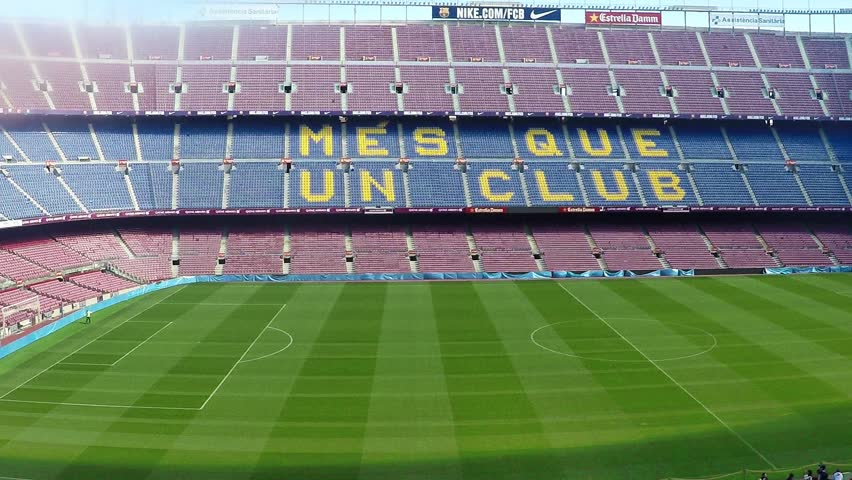

Barcelona Group a team History
 On October 22, 1899, Hans Gambert published an advertisement from the magazine claiming that he wanted to build a football club. Finally, at the meeting held at Gimnasio Solé on 29 November, a total of eleven players from Switzerland, the United Kingdom and Catalonia joined the team, including Gualteri Wild, Lluís d'Ossó, Bartomeu Terradas, Otto Kunzle, Otto Maier, Enric Ducal, Pere Cabot, Carles Pujol, Josep Llobet, John Parsons and William Parsons, on which the Barcelona Football Club was officially established.
Barcelona's first meeting elected the club president and named the team name, etc., the president of the decision by the local Catalan Gualteri Wild as the club name named Barcelona football club. The club will use the same badge pattern as the city of Barcelona (that is, the left side is the white cross with the red cross, the right is the red and yellow straight bar), to express the relationship between Catalonia, and the jersey is the reference to Gambo Of the former ball club will be the color of the ball, the left is dark red and the right is blue, blue and red two colors in the middle of the separation, Gambert is just two colors tone, as Barcelona's creative jersey.
On October 22, 1899, Hans Gambert published an advertisement from the magazine claiming that he wanted to build a football club. Finally, at the meeting held at Gimnasio Solé on 29 November, a total of eleven players from Switzerland, the United Kingdom and Catalonia joined the team, including Gualteri Wild, Lluís d'Ossó, Bartomeu Terradas, Otto Kunzle, Otto Maier, Enric Ducal, Pere Cabot, Carles Pujol, Josep Llobet, John Parsons and William Parsons, on which the Barcelona Football Club was officially established.
Barcelona's first meeting elected the club president and named the team name, etc., the president of the decision by the local Catalan Gualteri Wild as the club name named Barcelona football club. The club will use the same badge pattern as the city of Barcelona (that is, the left side is the white cross with the red cross, the right is the red and yellow straight bar), to express the relationship between Catalonia, and the jersey is the reference to Gambo Of the former ball club will be the color of the ball, the left is dark red and the right is blue, blue and red two colors in the middle of the separation, Gambert is just two colors tone, as Barcelona's creative jersey.
After a season of disappointment without the crown season, Barcelona decided to replace the leadership, by the former players, former B team coach, when Serta coach Luis Enrique back to take over. In the summer of 2014, Barcelona signed Sevilla midfielder Rajdie and Liverpool Shen Feng Luis Alberto Suarez, and sold some players such as Sanchez, Fabregas, etc., hope the new season the most Success. However, the face of a strong Real Madrid, coupled with the suspension of Suarez, the beginning of the season so that fans will once again usher in a season of frustration. Resting the winter before and after the non-stop Luis Enrique and Messi led the players do not match, so that Barcelona foreground worse. However, into the 2015, Barcelona is a new look, and down the Sakamoto Real Madrid has a sharp contrast. After Real Madrid lost points, run to complete, united Barcelona successfully seize the opportunity to board the top. At the same time Messi, Suarez and Nei Maer's "MSN" combination also showed amazing firepower, they scored in the season's game up to 122 goals, is considered the strongest combination of today's front.
Camp Nou

Camp Nou is located in the Spanish capital of Barcelona, the capital of Barcelona, the football field, belonging to the Spanish team Barcelona home, is one of the world's most familiar football field. Admission up to 99,354 people, is the largest in Europe, the world's third largest football field, in 1998 to 99 years by the European Football Federation selected five-star golf course.
Honours
Domestic competitions
- La Liga
Winners (24): 1928–29, 1944–45, 1947–48, 1948–49, 1951–52, 1952–53, 1958–59, 1959–60, 1973–74, 1984–85, 1990–91, 1991–92, 1992–93, 1993–94, 1997–98, 1998–99, 2004–05, 2005–06, 2008–09, 2009–10, 2010–11, 2012–13, 2014–15, 2015–16
- Copa del Rey
Winners (28) – record: 1909–10, 1911–12, 1912–13, 1919–20, 1921–22, 1924–25, 1925–26, 1927–28, 1941–42, 1950–51, 1951–52, 1952–53, 1956–57, 1958–59, 1962–63, 1967–68, 1970–71, 1977–78, 1980–81, 1982–83, 1987–88, 1989–90, 1996–97, 1997–98, 2008–09, 2011–12, 2014–15, 2015–16
- Supercopa de España
Winners (12) – record: 1983, 1991, 1992, 1994, 1996, 2005, 2006, 2009, 2010, 2011, 2013, 2016
-
Copa Eva Duarte
Winners (3) – record: 1948, 1952, 1953
- Copa de la Liga
Winners (2) – record: 1982–83, 1985–86
- European competitions
European Cup / UEFA Champions League
Winners (5): 1991–92, 2005–06, 2008–09, 2010–11, 2014–15
- European Super Cup / UEFA Super Cup
Winners (5) – shared record: 1992, 1997, 2009, 2011, 2015
- European Cup Winners' Cup / UEFA Cup Winners' Cup[250]
Winners (4) – record: 1978–79, 1981–82, 1988–89, 1996–97
- Inter-Cities Fairs Cup
Winners (3) – record: 1955–58, 1958–60, 1965–66
- Worldwide competitions
FIFA Club World Cup[252]
Winners (3) – record: 2009, 2011, 2015
 News
History
News
History